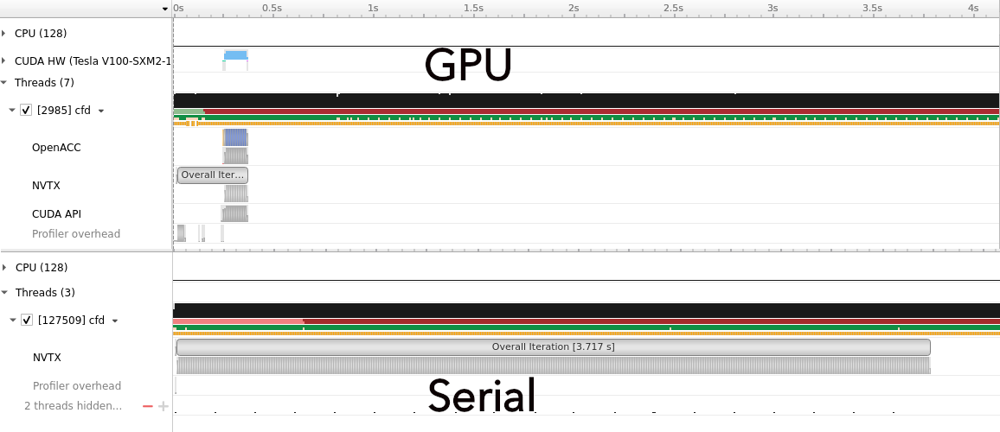
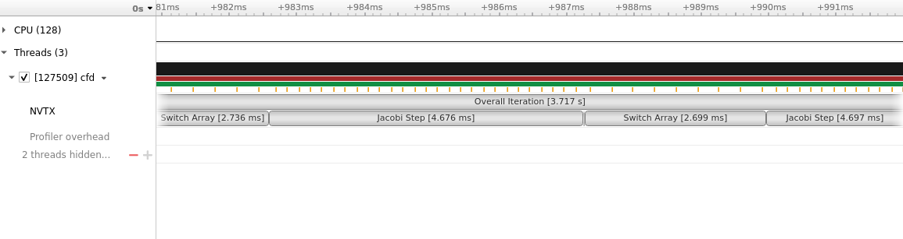
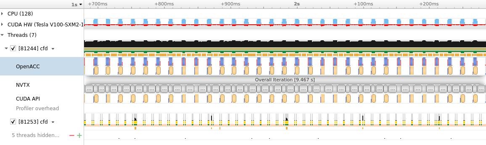
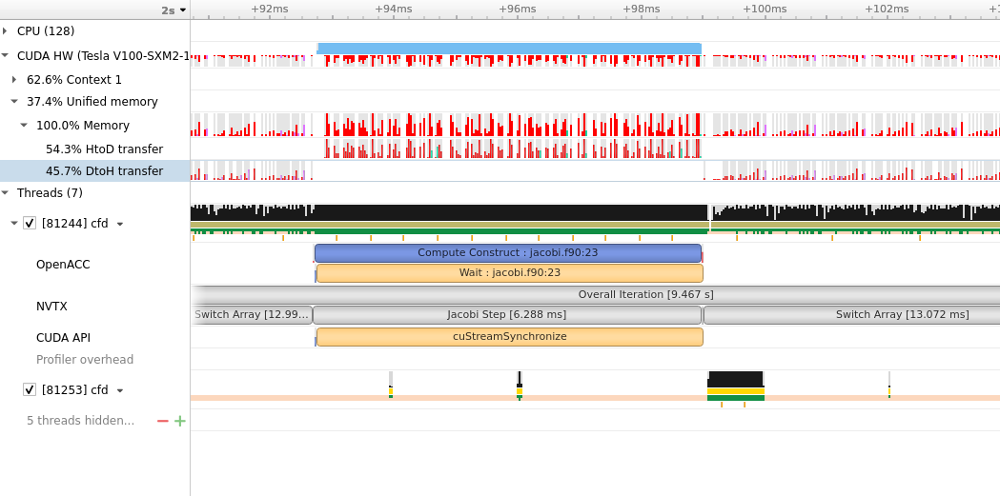
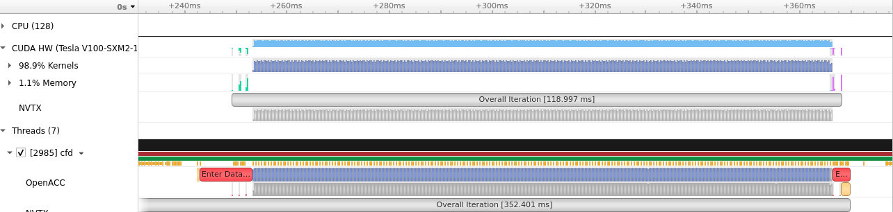
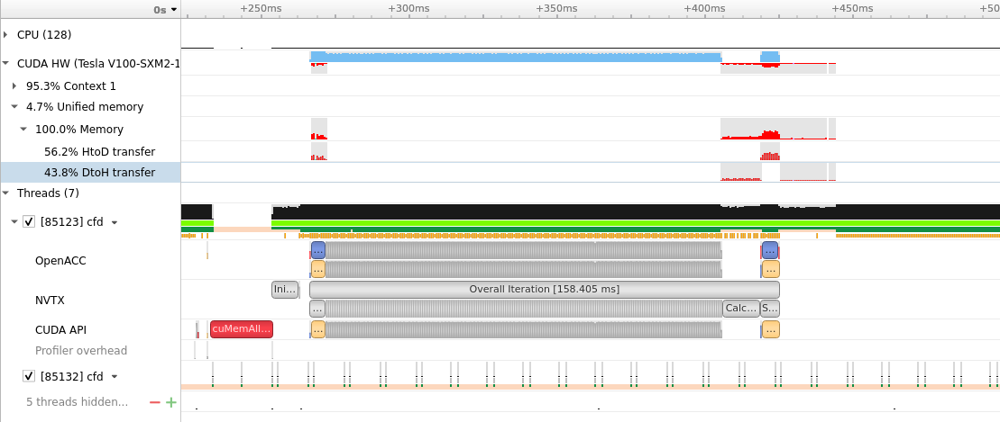

On a daily basis you have a lot of inputs: you read and listen to things, you talk to people and gather information. You, I, consume a lot, both for work and for pleasure.
Less often I, you?, take a pause and elaborate on what I’ve learning.
Here, I’ll talk about my experience with a GPU Bootcamp co-organized by Nvidia.
The Bootcamp
This bootcamp was organized by the Croatian HPC center and Nvidia on October 28-29, 2021. The format was interesting. In the first morning the speakers provided a preview of OpenMP, OpenACC and CUDA and the students had access to jupyter notebooks to dig deeper in the concepts at their own pace. Interestingly, we were divided into groups based on the programming language of choice to interact with colleagues and brainstorm.
The second morning had the best part: a challenge. We received a serial code and in the 3 hours we had to improve its performances. It was guided: it was obvious what part of the code you should focus on, but not how to do it.
This part is what I enjoyed the most: discussing with peers on what to do, without restraints.
I’ll post here some notes on what we did. It is not a course on OpenACC, OpenMP or something similar. I have decent experience with OpenMP, but it was my first time with OpenACC. I used the translation !$omp into !$acc as a rule of thumb. I assumed, as working hypothesis, that they are quite similar.
Follow me in this journey!
Spoiler alert

The serial
The code is a miniapp that performs computational fluid dynamics.
Without going in all the details, the code has the main code in cfd.f90 and the routine to perform the step in jacobi.f90. And the makefile, of course.
You can imagine the code as the following:
- initialization;
- iterations: compute new array from previos iteration, check error, switch the old array with the new computed one;
- finalization.
Let’s see how it behaves. Compiled and run:
elapsed time for 500 iterations was 3.717 seconds
First, we run the code and profile it with nsys:
nsys profile -t nvtx --stats=true --force-overwrite true -o minicfd_serial_profile ./cfd 64 500
The interesting part of the output is in this table:
Time(%) Total Time (ns) Instances Average Range
------- --------------- --------- --------------- -----------------
50.0 3,717,320,116 1 3,717,320,116.0 Overall Iteration
31.6 2,347,212,749 500 4,694,425.5 Jacobi Step
18.3 1,360,728,005 500 2,721,456.0 Switch Array
0.1 5,152,763 500 10,305.5 Calculate Error
0.1 4,892,991 1 4,892,991.0 Initialization
0.0 8,902 1 8,902.0 boundaryPSI
and here how it looks on the profiler:

The obvious place to start is the Jacobi step:
subroutine jacobistep(psinew, psi, m, n)
integer :: m, n
double precision, dimension(0:m+1, 0:n+1) :: psinew, psi
psinew(1:m, 1:n) = 0.25d0*(psi(2:m+1, 1:n) + psi(0:m-1, 1:n) + &
psi(1:m, 2:n+1) + psi(1:m, 0:n-1) )
end subroutine jacobistep
Unified memory and I-know-better programmmer
In general CPU and GPU have their own memory. Data are stored on the CPU and, if using OpenMP, the programmer has to declare what variables should be allocated also on the device.
These data movements might slow down the execution of the code, if the GPU has to wait the host, CPU, and viceversa.
To help you deal with data movement, Nvidia (and now Apple? 🤔) makes CPU and GPU see the same memory addresses.
In this case what you need to do is just to add the compiler option -ta=tesla:managed.
Parallel loop
To use OpenACC, we need to rewrite the update with two do-loops and we can add the !$acc
directives.
subroutine jacobistep_acc(psinew, psi, m, n)
integer :: m, n
integer :: i, j
double precision, dimension(0:m+1, 0:n+1) :: psinew, psi
!$acc parallel loop
do j=1,n
do i=1,m
psinew(i, j) = 0.25d0*(psi(2:m+1, 1:n) + psi(0:m-1, 1:n) + &
psi(1:m, 2:n+1) + psi(1:m, 0:n-1) )
!$acc end parallel
end subroutine jacobistep_acc
We add also the instruction -Minfo=accel -acc -ta=tesla:managed to the Makefile:
Minfo=accel, to generate information on optimization for the available accelerator;-acc, to enable the OpenAcc directives;-ta=tesla:managed, to tell the compiler the GPU architecture and whether to use the Unified Memory.
We compile and run with
nsys profile -t nvtx,openacc,cuda --stats=true --force-overwrite true -o minicfdopenacc_profile ./cfd 64 500
Now
the elapsed time is 9.467 seconds (Ouch!) and a summary from the profiling:
Time(%) Total Time (ns) Instances Average Range
------- --------------- --------- --------------- -----------------
50.0 9,466,895,513 1 9,466,895,513.0 Overall Iteration
33.6 6,356,675,349 500 12,713,350.7 Switch Array
16.3 3,090,186,769 500 6,180,373.5 Jacobi Step
0.1 13,560,264 500 27,120.5 Calculate Error
0.0 9,113,720 1 9,113,720.0 Initialization
0.0 8,521 1 8,521.0 boundaryPSI
Let’s have a look at the graphical version of the profiler.

On top we see the GPU working in light blue/cyan. But there isn’t a continous line. We can see a pattern, each time
we are calling the jacobistep_acc. In principle we would like a continous cyan line, i.e. a GPU always working. The limiting factor, though,
is the extensive communication between host (CPU) and device (GPU).
A closer look at the Jacobi step, show that data are transferred to the Device during the computation. At the end of the step the data are moved
back to the host. For all the 500 iterations.

(copy) In and out
At this point, during the bootcamp, we thought:
We know better. We can tell the compiler when and what data we need!
We can use !$acc data copy(psi(0:m+1, 0:n+1)) create(psi_tmp(0:n+1, 0:m+1)) and the closing directive !$acc end data to define a data region
in which call jacobistep_acc(...) occurs.
We need to remove the managed option from the compiler flags, since we-know-better.
At this point the code is basically the same as the previous iteration. To improve the data management, we can then put the data region
outside the main loop (defined in step 2.). We need to check where the arrays psi and psitmp are used: in computing the error with a function called deltasq; in switching the new array with old one.
The error function and the switching can be rewritten as two do-loops, since both were using the vectorized syntax, and we can use the directives seen for the Jacobi step.
As a good measure we use the clause collapse(2) in the !$acc parallel loop directive to merge the double loop.
Let’s run it:
elapsed time for 500 iterations was 0.3524 seconds.

The profiler tells us something interesting.

Most of the GPU time is spent in the kernels, i.e. in the computation we asked it to accelerate. The data movements occur only at the beginning, green lines, with host to device communications, and at the end of the iterations, from the device to the host.A zoom in the cyan region shows the pattern we had before, but now, there is no bottleneck in the exchange of the data.
And this conclude what I learned during the bootcamp.
There are other few things, like the !$acc routine, but I haven’t explored yet.
Conclusi… or not?
Writing this post I had a question.
What if I use the managed memory approach also in the Switch array?
So, I just used the previously defined jacobistep_acc, the explicit loop for the switch, surrounded by the parallel loop region, as shown here:
call nvtxStartRange("Switch Array")
!$acc parallel loop
do j=1,n
do i=1,m
psi(i, j) = psitmp(i, j)
end do
end do
!$acc end parallel
Nothing more. No data region, no other check whether an array is used or not. (We had some bugs before reaching the 0.35 seconds 😅)
This approach is too simple. It will work, but it will not be great…
Elapsed time for 500 iterations was 0.1584 seconds.

So, with the unified memory approach that can be exploited with OpenACC, you can obtain significant improvement in performances.
With the custom data management, we gained a factor 10 (3.717/0.352) in speedup. With the unified memory, and fewer lines of code we got a factor of 23!!!!!!

The End
The experience has been super nice. I learned a lot from my teammates. It is enough to be an expert, but it is sufficient to start my journey in the OpenACC world.
Usually people don’t need a step-by-step guide for all the journey, but indications at the beginning of their path. They will not get lost or discouraged while inexperienced; later they’ll figure things out on their own.
#tantecarecose
Комментарии